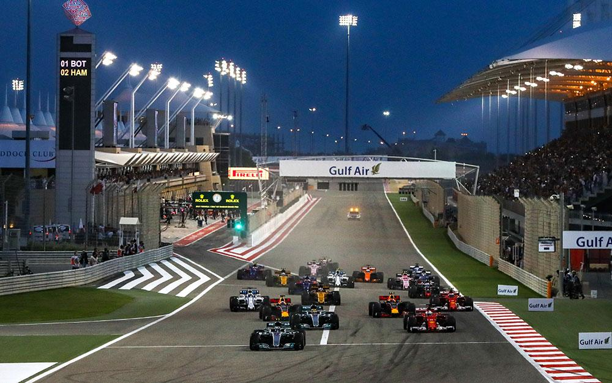

BAHRAIN GRAND PRIX
Cicuit Length:
5.412 km (3.362 mi)
Turns:
15
Number of Laps:
58
First Grand Prix:
2004
Race Distance:
308.238 km
Bahrain's race takes place in the Mid-East. Manama is the capital of Bahrain,
about 155 thousend people live in Manama. And across Bahrain live about 1.5 million inhabitants. So far the record holder
of this circuit is Pedro de la Rosa. This year (2021) the race will be on March 28. The fastest speed last year (2019) was measured at 235km/h.
The Bahrain Grand Prix is often the second event of the Formula 1 of the Calendar year.

Winners of the Bahrain GP
2020 - Lewis Hamilton
2019 - Lewis Hamilton
2018 - Sebastian Vettel
2017 - Sebastian Vettel
2016 - Nico Rosberg
2015 - Lewis Hamilton
2014 - Lewis Hamilton
2013 - Sebastian Vettel
2012 - Sebastian Vettel
2011 - Canceled due to protests
2010 - Fernando Alonso
2009 - Jenson Button
2008 - Felipe Massa
2007 - Felipe Massa